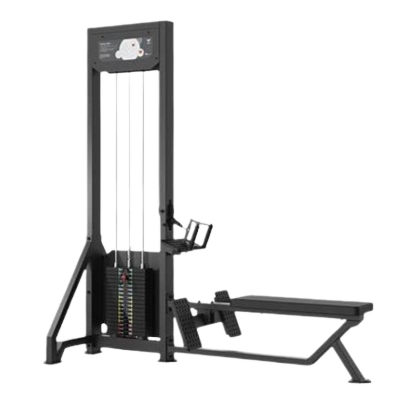
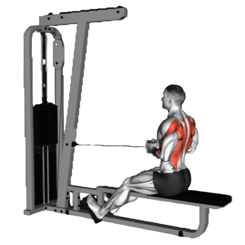
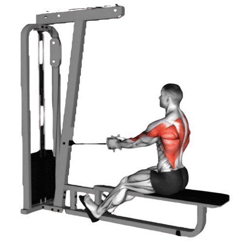

케이블 시티드로우

- 손잡이를 양손으로 잡고, 허리는 곧게 펴고 어깨를 뒤로 당겨 가슴을 내민다.
- 상체는 약간 앞으로 기울일 수 있지만, 과도하게 구부리지 않도록 주의한다.
- 숨을 내쉬면서 손잡이를 배꼽 쪽으로 당긴다. 이때, 상체는 고정된 상태로 유지하며 반동을 사용하지 않는다.
- 이때 호흡은 뱉는다.
- 손잡이를 천천히 원래 위치로 되돌리며, 팔을 펴준다.
- 이때 호흡은 마신다.

주의사항
- 운동 중 반동을 사용하면 운동 효과가 줄어들고 부상의 위험이 커진다.
- 손잡이를 당길 때 견갑골이 뒤쪽으로 모이도록 하여 등 근육이 제대로 수축할 수 있도록 한다.
- 운동속도를 빠르게 하지 말고, 천천히 일정하게 유지한다.
- 지나치게 무거운 중량은 잘못된 자세를 유발할 수 있어 부상의 원인이 된다.
운동부위 및 효과
- 광배근, 승모근, 능현근, 전완근, 이두근, 대원근
- 등 근육이 발달하면서 구부정한 자세를 교정하는 데 도움이 된다. 어깨가 뒤로 당겨지고 등이 곧게 펴져 바른 자세를 유지할 수 있게 해준다.